08-docker容器跨主机通信
一、Docker网络基本原理
直观上看，要实现网络通信，机器需要至少一个网络接口（物理接口或虚拟接口）与外界相通，并可以收发数据包；
此外，如果不同子网之间要进行通信，需要额外的路由机制。
Docker中的网络接口默认都是虚拟的接口。虚拟接口的最大优势就是转发效率极高。
这是因为Linux通过在内核中进行数据复制来实现虚拟接口之间的数据转发，即发送接口的发送缓存中的数据包将被直接复制到接收接口的接收缓存中，而无需通过外部物理网络设备进行交换。
对于本地系统和容器内系统来看，虚拟接口跟一个正常的以太网卡相比并无区别，只是它速度要快得多。
Docker容器网络就很好地利用了Linux虚拟网络技术，在本地主机和容器内分别创建一个虚拟接口，并让它们彼此连通（这样的一对接口叫做veth pair）。
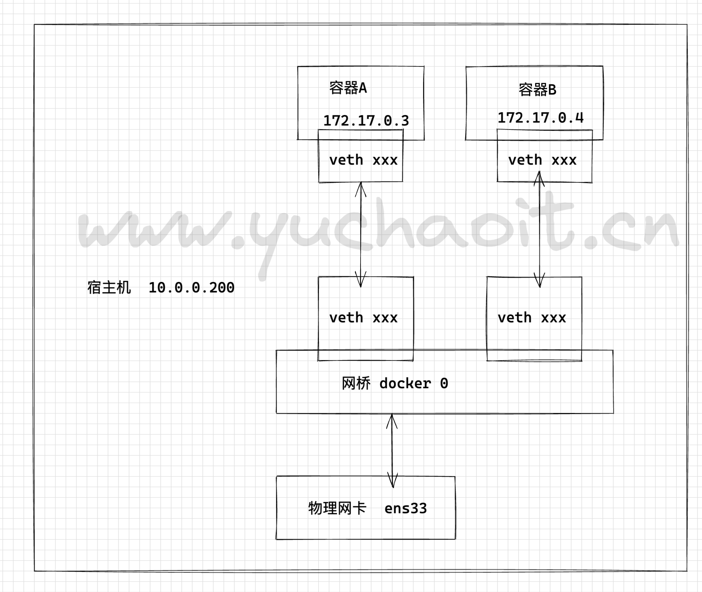
一般情况下，Docker创建一个容器的时候，会具体执行如下操作：
1.创建一对虚拟接口，分别放到本地主机和新容器的命名空间中；
2.本地主机一端的虚拟接口连接到默认的docker0网桥或指定网桥上，并具有一个以veth开头的唯一名字，如veth1234；
3.容器一端的虚拟接口将放到新创建的容器中，并修改名字作为eth0。这个接口只在容器的命名空间可见；
4.从网桥可用地址段中获取一个空闲地址分配给容器的eth0（例如172.17.0.2/16），并配置默认路由网关为docker0网卡的内部接口docker0的IP地址（例如172.17.42.1/16）。
完成这些之后，容器就可以使用它所能看到的eth0虚拟网卡来连接其他容器和访问外部网络。
用户也可以通过docker network命令来手动管理网络。
二、Docker网络默认模式
按docker官方的说法，docker容器的网络有五种模式：
1）bridge模式，--net=bridge(默认)
这是dokcer网络的默认设置，为容器创建独立的网络命名空间，容器具有独立的网卡等所有单独的网络栈，是最常用的使用方式。
在docker run启动容器的时候，如果不加--net参数，就默认采用这种网络模式。安装完docker，系统会自动添加一个供docker使用的网桥docker0，我们创建一个新的容器时，
容器通过DHCP获取一个与docker0同网段的IP地址，并默认连接到docker0网桥，以此实现容器与宿主机的网络互通。
2）host模式，--net=host
这个模式下创建出来的容器，直接使用容器宿主机的网络命名空间。
将不拥有自己独立的Network Namespace，即没有独立的网络环境。它使用宿主机的ip和端口。
3）none模式，--net=none
为容器创建独立网络命名空间，但不为它做任何网络配置，容器中只有lo，用户可以在此基础上，对容器网络做任意定制。
这个模式下，dokcer不为容器进行任何网络配置。需要我们自己为容器添加网卡，配置IP。
因此，若想使用pipework配置docker容器的ip地址，必须要在none模式下才可以。
4）其他容器模式（即container模式），--net=container:NAME_or_ID
与host模式类似，只是容器将与指定的容器共享网络命名空间。
这个模式就是指定一个已有的容器，共享该容器的IP和端口。除了网络方面两个容器共享，其他的如文件系统，进程等还是隔离开的。
5）用户自定义：docker 1.9版本以后新增的特性，允许容器使用第三方的网络实现或者创建单独的bridge网络，提供网络隔离能力。
bridge模式
bridge模式是docker默认的，也是开发者最常使用的网络模式。在这种模式下，docker为容器创建独立的网络栈，保证容器内的进程使用独立的网络环境， 实现容器之间、容器与宿主机之间的网络栈隔离。
同时，通过宿主机上的docker0网桥，容器可以与宿主机乃至外界进行网络通信。 其网络模型可以参考下图：
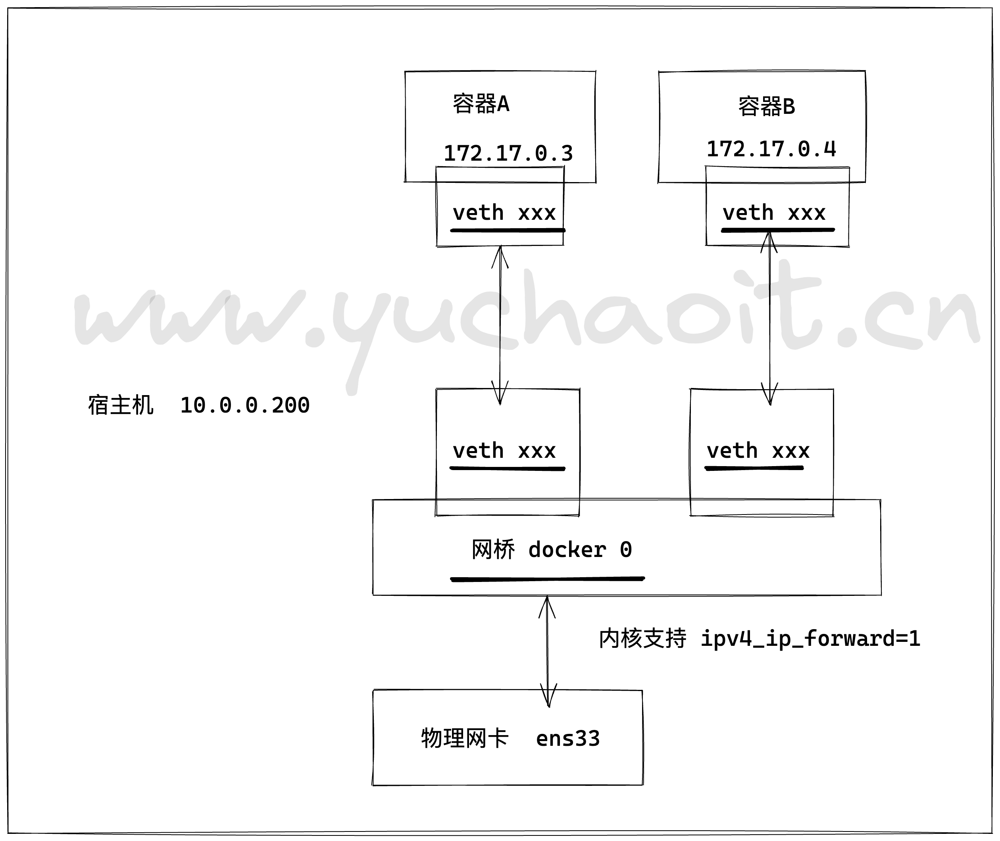
从上面的网络模型可以看出，容器从原理上是可以与宿主机乃至外界的其他机器通信的。
同一宿主机上，容器之间都是连接掉docker0这个网桥上的，它可以作为虚拟交换机使容器可以相互通信。
然而，由于宿主机的IP地址与容器veth pair的 IP地址均不在同一个网段，故仅仅依靠veth pair和namespace的技术，还不足以使宿主机以外的网络主动发现容器的存在。
为了使外界可以方位容器中的进程，docker采用了端口绑定的方式，也就是通过iptables的NAT，将宿主机上的端口流量转发到容器内的端口上。
举一个简单的例子，使用下面的命令创建容器，并将宿主机的3306端口绑定到容器的3306端口：
docker run -tid --name db -p 3306:3306 MySQL
在宿主机上，可以通过iptables -t nat -L -n，查到一条DNAT规则：
DNAT tcp -- 0.0.0.0/0 0.0.0.0/0 tcp dpt:3306 to:172.17.0.5:3306
上面的172.17.0.5即为bridge模式下，创建的容器IP。
很明显，bridge模式的容器与外界通信时，必定会占用宿主机上的端口，从而与宿主机竞争端口资源，对宿主机端口的管理会是一个比较大的问题。
同时，由于容器与外界通信是基于三层上iptables NAT，性能和效率上的损耗是可以预见的。
三、容器跨主机通信
概述
就目前Docker自身默认的网络来说，单台主机上的不同Docker容器可以借助docker0网桥直接通信，这没毛病
而不同主机上的Docker容器之间只能通过在主机上用映射端口的方法来进行通信，有时这种方式会很不方便，甚至达不到我们的要求。宿主机端口不够了，冲突了怎么办？
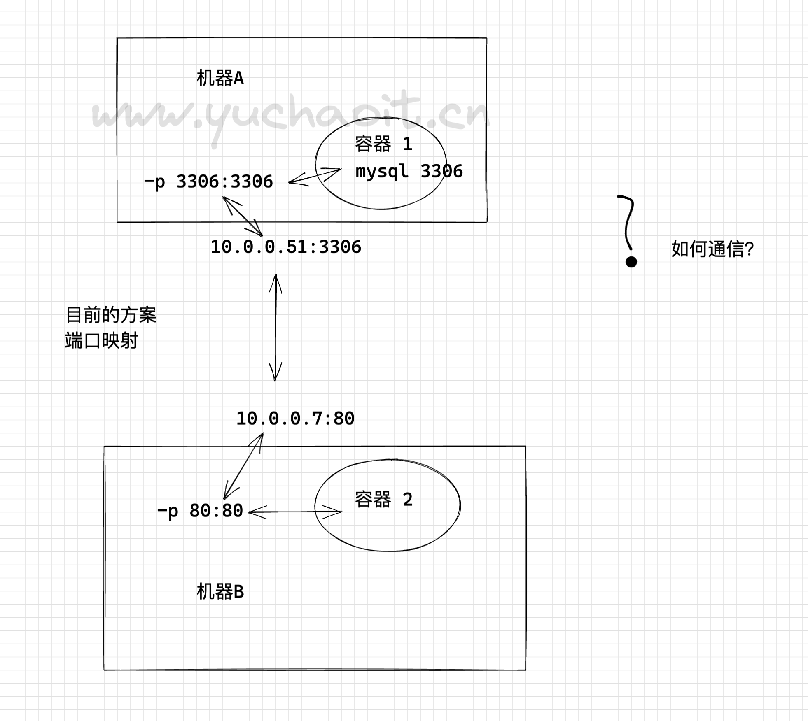
因此位于不同物理机上的Docker容器之间直接使用本身的IP地址进行通信很有必要。
再者说，如果将Docker容器起在不同的物理主机上，我们不可避免的会遭遇到Docker容器的跨主机通信问题。本文就来尝试一下。
容器跨主机通信方案
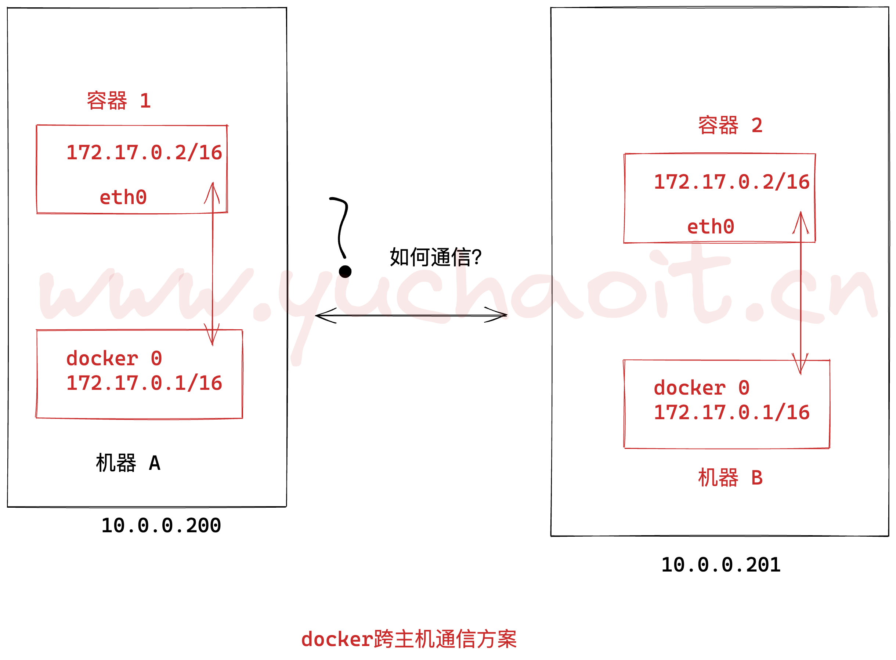
方案1：基于iptables的静态路由
此时两台主机上的Docker容器如何直接通过IP地址进行通信？
一种直接想到的方案便是通过分别在各自主机中 添加路由 来实现两个centos容器之间的直接通信。我们来试试吧
方案原理图
由于使用容器的IP进行路由，就需要避免不同主机上的容器使用了相同的IP，为此我们应该为不同的主机分配不同的子网来保证。
于是我们构造一下两个容器之间通信的路由方案，如下图所示。
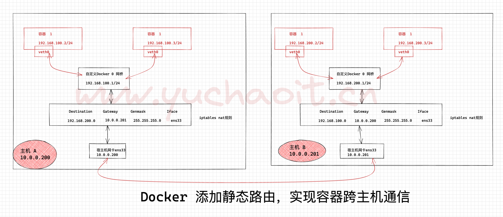
核心逻辑就是，利用iptables实现数据包转发
1. 主机A的容器数据包，网关指向机器B
数据包头
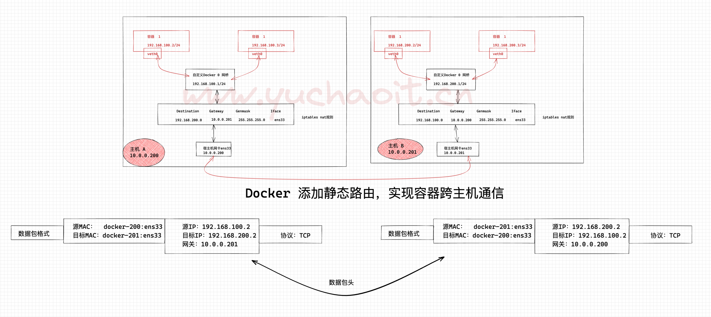
配置说明步骤
1. 两个宿主机的容器，分别有自己的网段，不得冲突了
2. 两台机器，都配置了静态路由规则，互相传递数据
3. 内核，防火墙要支持数据包转发
实践
docker-200
1.修改docker0的网段
cat> /etc/docker/daemon.json <<'EOF'
{
"bip":"192.168.100.1/24",
"registry-mirrors" : [
"https://ms9glx6x.mirror.aliyuncs.com"
],
"insecure-registries":["http://10.0.0.200"]
}
EOF
2.重载docker
systemctl daemon-reload
systemctl restart docker
ip a |grep 192.168.100
docker-201
1.修改docker0的网段
cat> /etc/docker/daemon.json <<'EOF'
{
"bip":"192.168.200.1/24",
"registry-mirrors" : [
"https://ms9glx6x.mirror.aliyuncs.com"
]
}
EOF
2.重载docker
systemctl daemon-reload
systemctl restart docker
ip a |grep 192.168.200
添加静态路由，以及iptables
docker-200
[root@docker-200 ~]#route -n
# 本机去往192.168.200.0网段的数据包，告诉它的网关是10.0.0.201，数据包的下一跳
route add -net 192.168.200.0/24 gw 10.0.0.201
[root@docker-200 ~]#route -n |grep 192.168.200
192.168.200.0 10.0.0.201 255.255.255.0 UG 0 0 0 ens33
# iptables规则，允许流量转发
iptables -A FORWARD -s 10.0.0.0/24 -j ACCEPT
Docker-201
route add -net 192.168.100.0/24 gw 10.0.0.200
iptables -A FORWARD -s 10.0.0.0/24 -j ACCEPT
启动容器测试通信
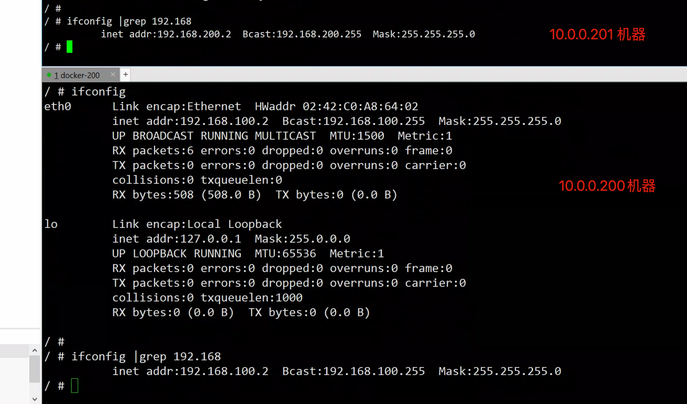
docker-200
docker run -it busybox /bin/sh
/ # ifconfig |grep 192.168
inet addr:192.168.100.2 Bcast:192.168.100.255 Mask:255.255.255.0
/ #
docker-201
[root@docker-201 ~]#docker run -it busybox /bin/sh
Unable to find image 'busybox:latest' locally
latest: Pulling from library/busybox
5cc84ad355aa: Pull complete
Digest: sha256:5acba83a746c7608ed544dc1533b87c737a0b0fb730301639a0179f9344b1678
Status: Downloaded newer image for busybox:latest
/ #
/ # ifconfig |grep 192.168
inet addr:192.168.200.2 Bcast:192.168.200.255 Mask:255.255.255.0
/ #
通信结果
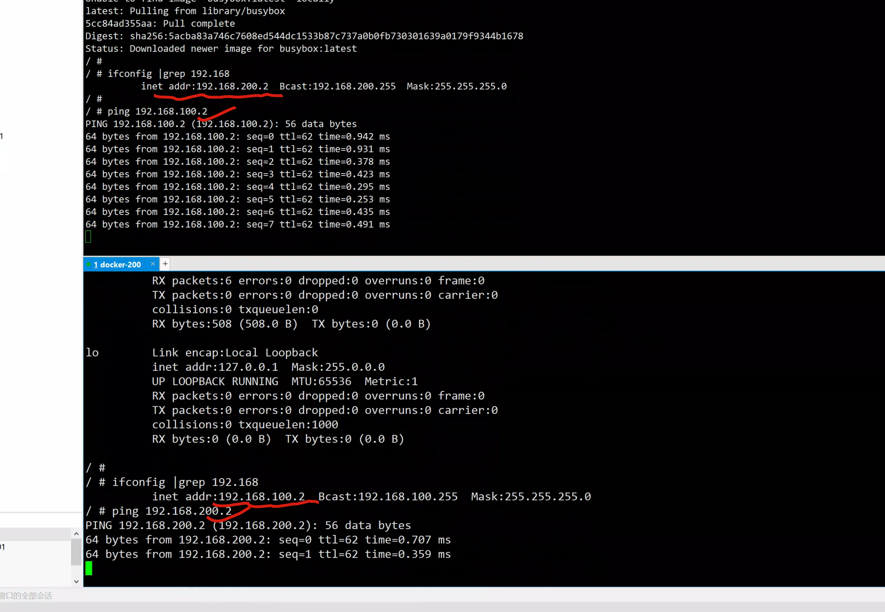
tcpdump抓取数据包
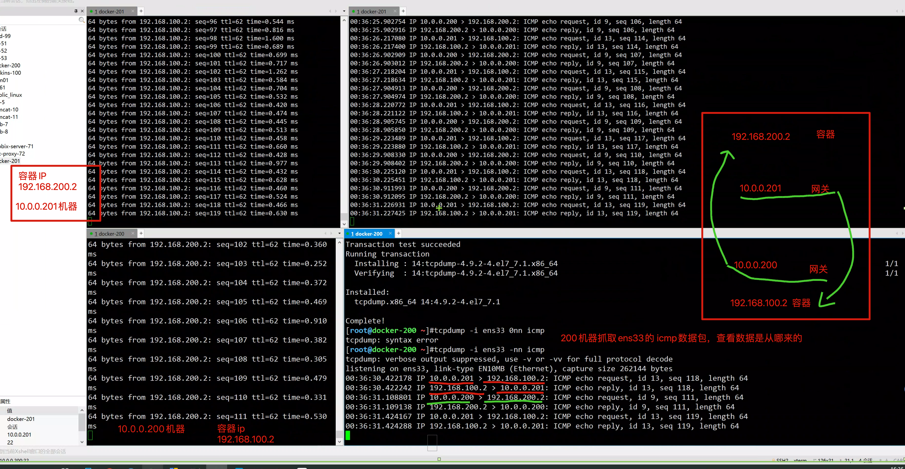
yum install tcpdump -y
200机器
[root@docker-200 ~]#tcpdump -i ens33 -nn icmp
201机器
[root@docker-201 ~]#tcpdump -i ens33 -nn icmp
tcpdump: verbose output suppressed, use -v or -vv for full protocol decode
listening on ens33, link-type EN10MB (Ethernet), capture size 262144 bytes
四、跨主机通信-flannel
flannel网络插件
官网资料
https://github.com/flannel-io/flannel
flannel是一个专门用于跨主机网络通信的解决方案技术；
flannel将tcp数据包封装在另一种网络数据包里进行路由转发，以及通信；
flannel可以让不同的docker主机创建的容器，共同有用一个集群中唯一的ip地址。
flannel原理
Flannel为每个host分配一个subnet，容器从subnet中分配IP，这些IP可以在host间路由，容器间无需使用nat和端口映射即可实现跨主机通信。
每个subnet都是从一个更大的IP池中划分的，flannel会在每个主机上运flanneld的agent，负责从池子中分配subnet。
Flannel使用etcd存放网络配置、已分配的subnet、host的IP等信息
Flannel数据包在主机间转发是由backend实现的，目前已经支持UDP、VxLAN、host-gw、AWS VPC和GCE路由等多种backend。
环境配置
1. 确保ntp时间正确
2. etcd安装
3. docker安装
4. 关闭默认防火墙，selinux
flannel架构图
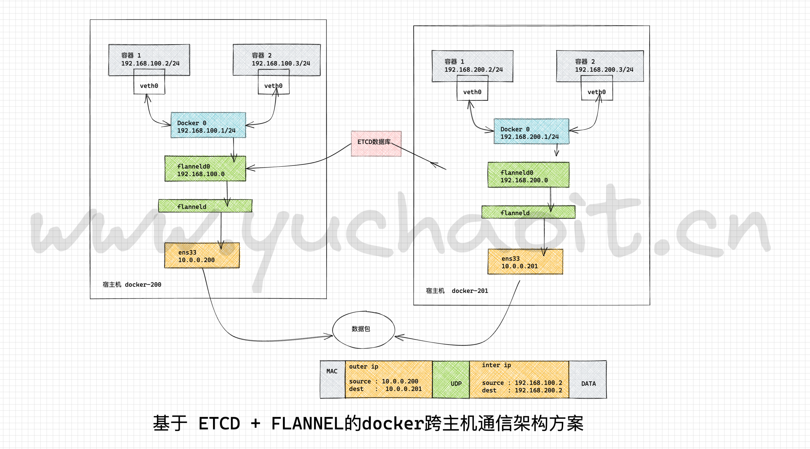
通信原理
1. 跨主机的容器，可以直接访问目标容器的ip，数据包从容器内部的veth0发出去
2.报文通过veth pair 发送给 宿主机的vethxxx
3.宿主机的vethxxx连接宿主机的虚拟交换机 docker0 ，数据包从虚拟网桥 bridge docker0 发出去。
4. 此时docker0发出的数据包被转发给flannel0这个虚拟网卡，这是一个p2p的虚拟网卡（https://zh.wikipedia.org/wiki/%E5%B0%8D%E7%AD%89%E7%B6%B2%E8%B7%AF）
然后报文被发给对端监听的另一个flanneld程序。
5.源主机的flanneld程序将原本的数据包封装后，根据自己维护的路由表，投递给目的地的flanneld程序，数据包到达目标机器之后再被解包，然后进入flannel0虚拟网卡，并且一层层的转发给docker0的虚拟网卡，docker0找到自己要连接的容器，最后到达目标容器。
6.注意点，每个节点的容器分配不能冲突，flannel通过etcd数据库存储每个节点的可用IP地址网段，以及通过修改docker的启动参数，--bip=x.x.x.x 实现限制容器的启动IP范围。
部署逻辑顺序
必须先启数据库etcd > flannel > docker ，因为flanneld需要去etcd读取容器的网络信息。
机器环境
这里用的etcd单机模式，以及也可以单独部署在一个服务器上。
10.0.0.200 docker-200 etcd flannel,docker
10.0.0.201 docker-201 flannel docker
docker-200配置
[root@docker-200 ~]#yum install etcd -y
配置文件
cat > /etc/etcd/etcd.conf << 'EOF'
# [member]
ETCD_NAME=default
ETCD_DATA_DIR="/var/lib/etcd/default.etcd"
ETCD_LISTEN_CLIENT_URLS="http://10.0.0.200:2379,http://127.0.0.1:2379"
# [cluster]
ETCD_INITIAL_CLUSTER_STATE="new"
ETCD_INITIAL_CLUSTER_TOKEN="etcd-cluster"
ETCD_ADVERTISE_CLIENT_URLS="http://10.0.0.200:2379"
EOF
[root@docker-200 ~]#systemctl start etcd
[root@docker-200 ~]#systemctl enable etcd
Created symlink from /etc/systemd/system/multi-user.target.wants/etcd.service to /usr/lib/systemd/system/etcd.service.
[root@docker-200 ~]#
测试etcd功能
[root@docker-200 ~]#etcdctl cluster-health
member 8e9e05c52164694d is healthy: got healthy result from http://10.0.0.200:2379
cluster is healthy
[root@docker-200 ~]#etcdctl -C http://10.0.0.200:2379 cluster-health
member 8e9e05c52164694d is healthy: got healthy result from http://10.0.0.200:2379
cluster is healthy
[root@docker-200 ~]#
读写etcd数据
[root@docker-200 ~]#etcdctl -C http://10.0.0.200:2379 set /testdir/k1 "hello www.yuchaoit.cn"
hello www.yuchaoit.cn
[root@docker-200 ~]#
[root@docker-200 ~]#etcdctl -C http://10.0.0.200:2379 get /testdir/k1
hello www.yuchaoit.cn
[root@docker-200 ~]#
列出etcd数据
[root@docker-200 ~]#etcdctl -C http://10.0.0.200:2379 ls /testdir/
/testdir/k1
[root@docker-200 ~]#
防火墙设置，放行etcd的数据包,2379,2380两个端口
[root@docker-200 ~]#iptables -A INPUT -p tcp -m tcp --dport 2379 -m state --state NEW,ESTABLISHED -j ACCEPT
[root@docker-200 ~]#iptables -A INPUT -p tcp -m tcp --dport 2380 -m state --state NEW,ESTABLISHED -j ACCEPT
[root@docker-200 ~]#iptables -nL
Chain INPUT (policy ACCEPT)
target prot opt source destination
ACCEPT tcp -- 0.0.0.0/0 0.0.0.0/0 tcp dpt:2379 state NEW,ESTABLISHED
ACCEPT tcp -- 0.0.0.0/0 0.0.0.0/0 tcp dpt:2380 state NEW,ESTABLISHED
2台机器部署flannel
1.安装flannel
yum install flannel -y
2.配置flannel
cp /etc/sysconfig/flanneld{,.bak}
# ls /etc/sysconfig/fl*
/etc/sysconfig/flanneld /etc/sysconfig/flanneld.bak
cat > /etc/sysconfig/flanneld << 'EOF'
# Flanneld configuration options
# etcd url location. Point this to the server where etcd runs
FLANNEL_ETCD_ENDPOINTS="http://10.0.0.200:2379"
# etcd config key. This is the configuration key that flannel queries
# For address range assignment
FLANNEL_ETCD_PREFIX="/atomic.io/network"
# Any additional options that you want to pass
#FLANNEL_OPTIONS=""
EOF
etcd配置（200机器写入）
根据架构图，添加etcd兼职，写入flannel配置，以及网络信息（加大网段范围）
etcdctl mk /atomic.io/network/config '{"Network":"192.168.0.0/16"}'
[root@docker-200 ~]#
[root@docker-200 ~]#etcdctl get /atomic.io/network/config
{"Network":"192.168.0.0/16"}
[root@docker-200 ~]#
[root@docker-200 ~]#
[root@docker-200 ~]#
[root@docker-200 ~]#etcdctl ls
/atomic.io
/testdir
[root@docker-200 ~]#
启动2个机器的flanneld程序
systemctl start flanneld.service
systemctl enable flanneld.service
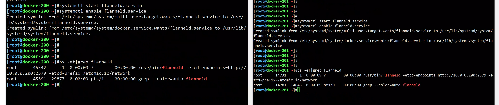
查看flannel环境
[root@docker-200 ~]#netstat -tunlp|grep flannel
udp 0 0 10.0.0.200:8285 0.0.0.0:* 45542/flanneld
[root@docker-200 ~]#
[root@docker-201 ~]#netstat -tunlp|grep flannel
udp 0 0 10.0.0.201:8285 0.0.0.0:* 14731/flanneld
[root@docker-201 ~]#
配置docker关联flannel网络
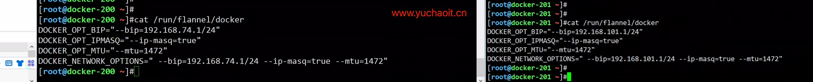
0.查看flannel对docker修改网段信息，2个机器执行
[root@docker-201 ~]#cat /run/flannel/docker
DOCKER_OPT_BIP="--bip=192.168.101.1/24"
DOCKER_OPT_IPMASQ="--ip-masq=true"
DOCKER_OPT_MTU="--mtu=1472"
DOCKER_NETWORK_OPTIONS=" --bip=192.168.101.1/24 --ip-masq=true --mtu=1472"
[root@docker-201 ~]#
cat /run/flannel/docker
1.修改docker配置文件
vim /usr/lib/systemd/system/docker.service
# 修改参数
[Service]
Type=notify
# the default is not to use systemd for cgroups because the delegate issues still
# exists and systemd currently does not support the cgroup feature set required
# for containers run by docker
EnvironmentFile=/run/flannel/docker
ExecStart=/usr/bin/dockerd -H fd:// $DOCKER_NETWORK_OPTIONS
ExecReload=/bin/kill -s HUP $MAINPID
TimeoutSec=0
RestartSec=2
Restart=always
2.重启docker(踩坑记录，之前于超老师修改过 daemon.json， 我干！)
systemctl daemon-reload
systemctl restart docker
添加防火墙规则
确保FORWARD链都是ACCEPT策略即可
查看网络环境
ifconfig
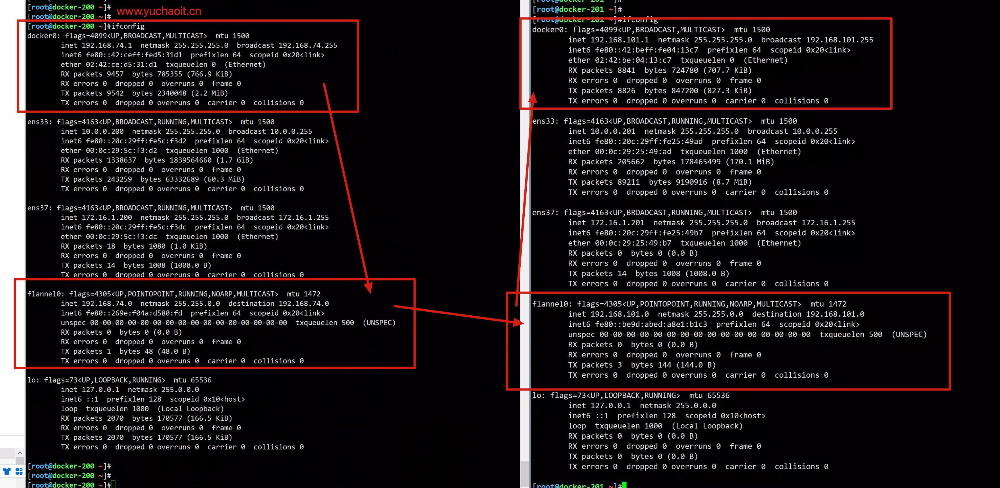
运行容器测试跨主机通信情况
docker-200机器
1.运行容器
docker run -it busybox /bin/sh
2.查看网络
ifconfig
3.访问目标机器上的容器
=======
docker-201机器
1.运行容器
docker run -it busybox /bin/sh
2.查看网络
ifconfig
3.访问目标机器上的容器
访问通信，抓包结果
200 > 201机器
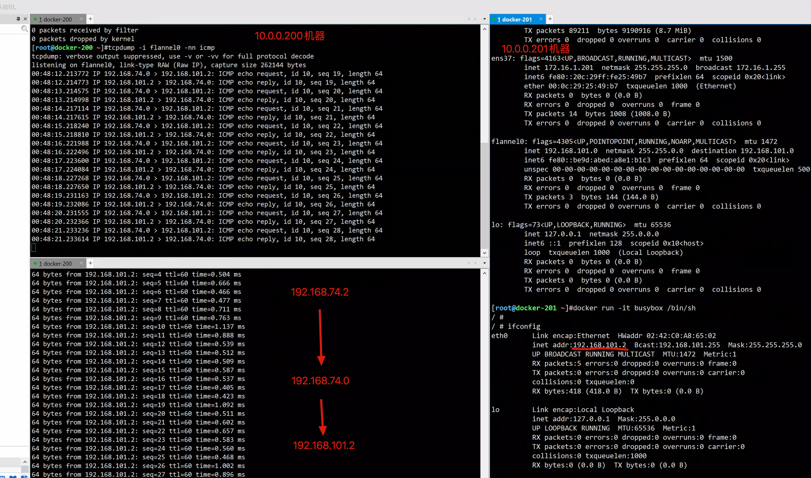
201 > 200
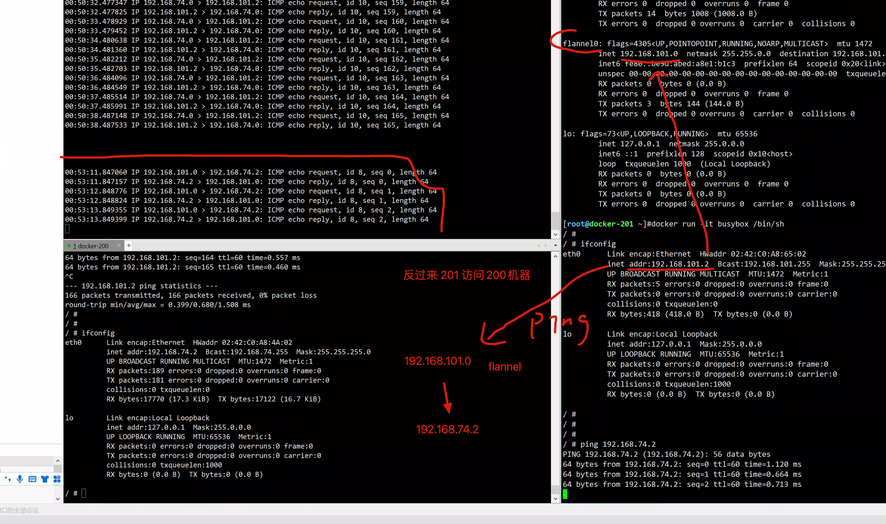
最终的网络架构图
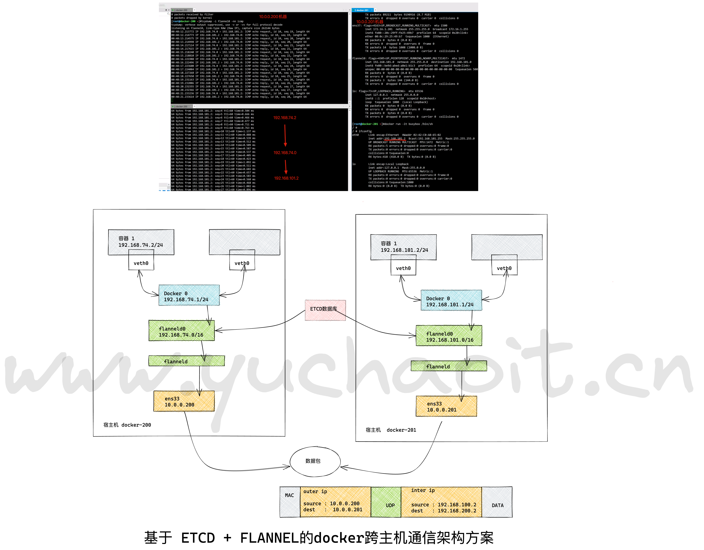
五、跨主机通信-macvlan
参考资料
https://ipwithease.com/what-is-macvlan/
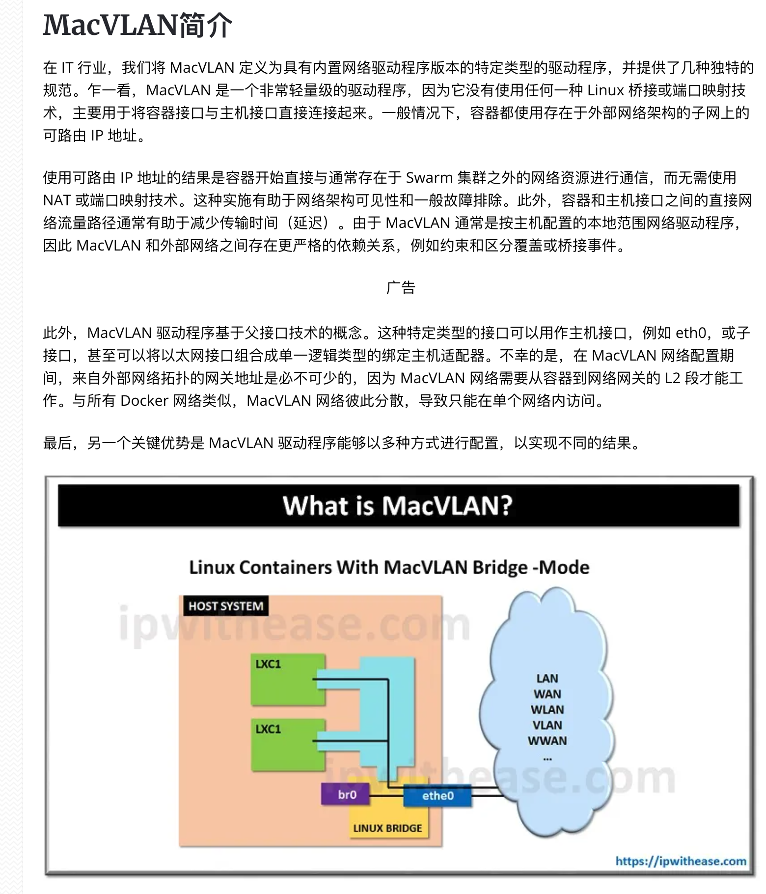
macvlan 用于 Docker 网络
如何理解macvlan技术
这种技术原理是 将物理网卡（ens33）虚拟成多个网卡
需要linux内核支持3.9+
[root@docker-200 ~]#lsmod |grep macvlan
macvlan 19239 1 macvtap
macvlan默认使用bridge模式，实现数据包转发。
这里更多是属于云计算网络的知识范畴。
在 Docker 中，macvlan 是众多 Docker 网络模型中的一种，并且是一种跨主机的网络模型，作为一种驱动（driver）启用（-d 参数指定）
Docker macvlan 只支持 bridge 模式。
首先准备两个主机节点的 Docker 环境，搭建如下拓扑图示：
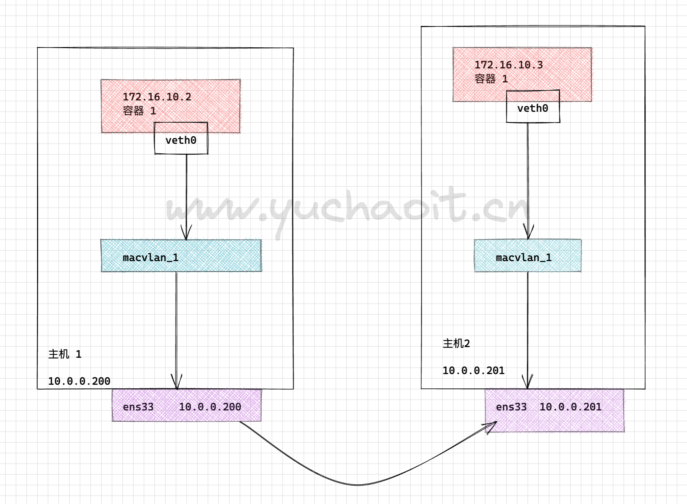
创建基于同一个macvlan网段的通信
分别在2个主机执行命令，创建macvlan网络环境即可
docker network create -d macvlan --subnet=172.16.10.0/24 --gateway=172.16.10.1 -o parent=ens33 macvlan_1
这条命令中，
-d 指定 Docker 网络 driver
--subnet 指定 macvlan 网络所在的网络
--gateway 指定网关
-o parent 指定用来分配 macvlan 网络的物理网卡
之后可以看到当前主机的网络环境，其中出现了 macvlan 网络：
[root@docker-200 ~]#docker network ls
NETWORK ID NAME DRIVER SCOPE
266e88b88c07 bridge bridge local
f3971eca0c0f host host local
ca0e2d298a44 macvlan_1 macvlan local
ff6208d689fb none null local
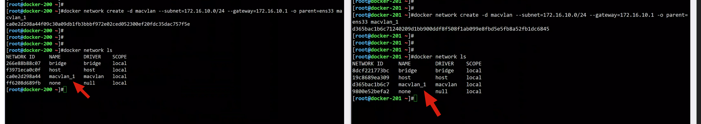
分别启动两个机器的容器
docker-200 启动容器，且指定用macvlan网络
--ip 指定容器 c1 使用的 IP，这样做的目的是防止自动分配，造成 IP 冲突
--network 指定 macvlan 网络
docker run -it --name www.yuchaoit.cn_macvlan --ip=172.16.10.2 --network macvlan_1 busybox
docker-201机器
docker run -it --name www.yuchaoit.cn_macvlan --ip=172.16.10.3 --network macvlan_1 busybox
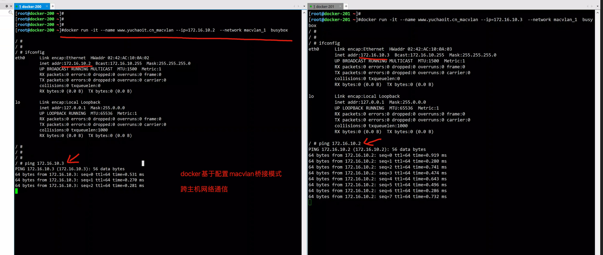
抓包看数据包走向
[root@docker-200 ~]#tcpdump -i ens33 -nn icmp
tcpdump: verbose output suppressed, use -v or -vv for full protocol decode
listening on ens33, link-type EN10MB (Ethernet), capture size 262144 bytes
01:14:20.937537 IP 172.16.10.3 > 172.16.10.2: ICMP echo request, id 8, seq 73, length 64
01:14:20.937569 IP 172.16.10.2 > 172.16.10.3: ICMP echo reply, id 8, seq 73, length 64
01:14:21.169355 IP 172.16.10.2 > 172.16.10.3: ICMP echo request, id 8, seq 68, length 64
01:14:21.170491 IP 172.16.10.3 > 172.16.10.2: ICMP echo reply, id 8, seq 68, length 64
可见，是直接基于ens33网卡转发的流量
macvlan还支持不同网段之间的连接
六、跨主机通信方案-consul注册中心
官网
https://www.consul.io/docs
https://www.consul.io/docs/intro/usecases/what-is-a-service-mesh 服务网格
二进制部署consul
[root@docker-200 ~]#
[root@docker-200 ~]#wget https://releases.hashicorp.com/consul/1.4.4/consul_1.4.4_linux_amd64.zip
--2022-08-30 01:28:19-- https://releases.hashicorp.com/consul/1.4.4/consul_1.4.4_linux_amd64.zip
Resolving releases.hashicorp.com (releases.hashicorp.com)... 13.249.167.10, 13.249.167.20, 13.249.167.41, ...
Connecting to releases.hashicorp.com (releases.hashicorp.com)|13.249.167.10|:443... connected.
HTTP request sent, awaiting response... 200 OK
Length: 34755554 (33M) [application/zip]
Saving to: ‘consul_1.4.4_linux_amd64.zip’
100%[===========================================================================>] 34,755,554 19.8MB/s in 1.7s
2022-08-30 01:28:22 (19.8 MB/s) - ‘consul_1.4.4_linux_amd64.zip’ saved [34755554/34755554]
[root@docker-200 ~]#
[root@docker-200 ~]#
[root@docker-200 ~]#unzip consul_1.4.4_linux_amd64.zip
Archive: consul_1.4.4_linux_amd64.zip
inflating: consul
[root@docker-200 ~]#
[root@docker-200 ~]#mv consul /usr/bin/consul
[root@docker-200 ~]#
[root@docker-200 ~]#chmod +x /usr/bin/consul
[root@docker-200 ~]#
[root@docker-200 ~]#consul -v
Consul v1.4.4
Protocol 2 spoken by default, understands 2 to 3 (agent will automatically use protocol >2 when speaking to compatible agents)
[root@docker-200 ~]#
[root@docker-200 ~]#
后台运行consul
[root@docker-200 ~]#nohup consul agent -server -bootstrap -ui -data-dir /var/lib/consul -client=10.0.0.200 -bind=10.0.0.200 &>/var/log/consul.log &
[1] 51445
$ 检查consul运行
[root@docker-200 ~]#jobs -l
[1]+ 51445 Running nohup consul agent -server -bootstrap -ui -data-dir /var/lib/consul -client=10.0.0.200 -bind=10.0.0.200 &>/var/log/consul.log &
[root@docker-200 ~]#
查看运行日志
tail -f /var/log/consul.log
docker-200修改docker启动文件
# 注意去掉flannel的配置
[root@docker-200 ~]#vim /lib/systemd/system/docker.service
[Service]
Type=notify
# the default is not to use systemd for cgroups because the delegate issues still
# exists and systemd currently does not support the cgroup feature set required
# for containers run by docker
containerd=/run/containerd/containerd.sock
ExecStart=/usr/bin/dockerd -H tcp://0.0.0.0:2375 -H unix:///var/run/docker.sock --cluster-store consul://10.0.0.200:8500 --cluster-advertise 10.0.0.200:2375
ExecReload=/bin/kill -s HUP $MAINPID
TimeoutSec=0
RestartSec=2
Restart=always
重启docker-200
[root@docker-200 ~]#systemctl daemon-reload
[root@docker-200 ~]#systemctl restart docker
[root@docker-200 ~]#
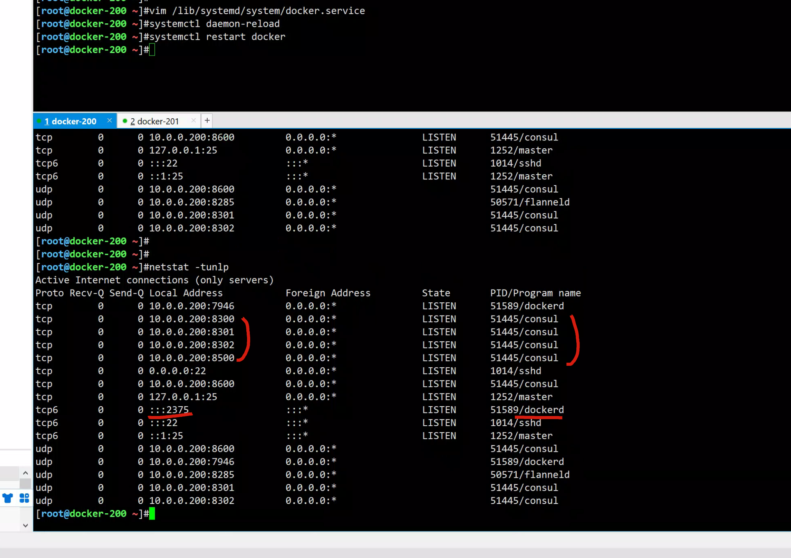
同样的重启docker201
修改当前机器docker地址信息即可。
# 参数
--cluster-store 指定了consul服务发现地址
--cluster-advertise 指定了本机服务注册地址，也可以用本机内网地址10.0.0.x代替
# 2375：未加密的docker socket,远程root无密码访问主机
# 表示将docker暴露在可访问的tcp的2375端口，通过ip:port远程管理docker
# 然后将自己的信息，注册到consul里 10.0.0.200:8500
#########
[Service]
Type=notify
# the default is not to use systemd for cgroups because the delegate issues still
# exists and systemd currently does not support the cgroup feature set required
# for containers run by docker
containerd=/run/containerd/containerd.sock
ExecStart=/usr/bin/dockerd -H tcp://0.0.0.0:2375 -H unix:///var/run/docker.sock --cluster-store consul://10.0.0.200:8500 --cluster-advertise 10.0.0.201:2375
ExecReload=/bin/kill -s HUP $MAINPID
TimeoutSec=0
RestartSec=2
Restart=always
重启
#
[root@docker-201 ~]#vim /lib/systemd/system/docker.service
[root@docker-201 ~]#systemctl daemon-reload
[root@docker-201 ~]#systemctl restart docker
访问consul-ui
创建完后通过浏览器访问一下，可以看到这两台会自动注册上来，这样的话这两个主机之间就会进行通信。
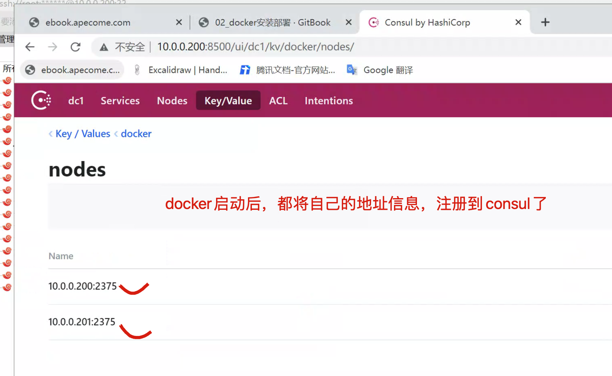
容器网络了解（关于docker内置的overlay网络）
DOCKER的内置OVERLAY网络
内置跨主机的网络通信一直是Docker备受期待的功能，在1.9版本之前，社区中就已经有许多第三方的工具或方法尝试解决这个问题，例如Macvlan、Pipework、Flannel、Weave等。
虽然这些方案在实现细节上存在很多差异，但其思路无非分为两种： 二层VLAN网络和Overlay网络
简单来说，二层VLAN网络解决跨主机通信的思路是把原先的网络架构改造为互通的大二层网络，通过特定网络设备直接路由，实现容器点到点的之间通信。这种方案在传输效率上比Overlay网络占优，然而它也存在一些固有的问题。
这种方法需要二层网络设备支持，通用性和灵活性不如后者。
由于通常交换机可用的VLAN数量都在4000个左右，这会对容器集群规模造成限制，远远不能满足公有云或大型私有云的部署需求； 大型数据中心部署VLAN，会导致任何一个VLAN的广播数据会在整个数据中心内泛滥，大量消耗网络带宽，带来维护的困难。
相比之下，Overlay网络是指在不改变现有网络基础设施的前提下，通过某种约定通信协议，把二层报文封装在IP报文之上的新的数据格式。这样不但能够充分利用成熟的IP路由协议进程数据分发；而且在Overlay技术中采用扩展的隔离标识位数，能够突破VLAN的4000数量限制支持高达16M的用户，并在必要时可将广播流量转化为组播流量，避免广播数据泛滥。
因此，Overlay网络实际上是目前最主流的容器跨节点数据传输和路由方案。
容器在两个跨主机进行通信的时候，是使用overlay network这个网络模式进行通信；如果使用host也可以实现跨主机进行通信，直接使用这个物理的ip地址就可以进行通信。overlay它会虚拟出一个网络比如10.0.2.3这个ip地址。在这个overlay网络模式里面，有一个类似于服务网关的地址，然后把这个包转发到物理服务器这个地址，最终通过路由和交换，到达另一个服务器的ip地址。
图解overlay+consul实现跨主机网络通信
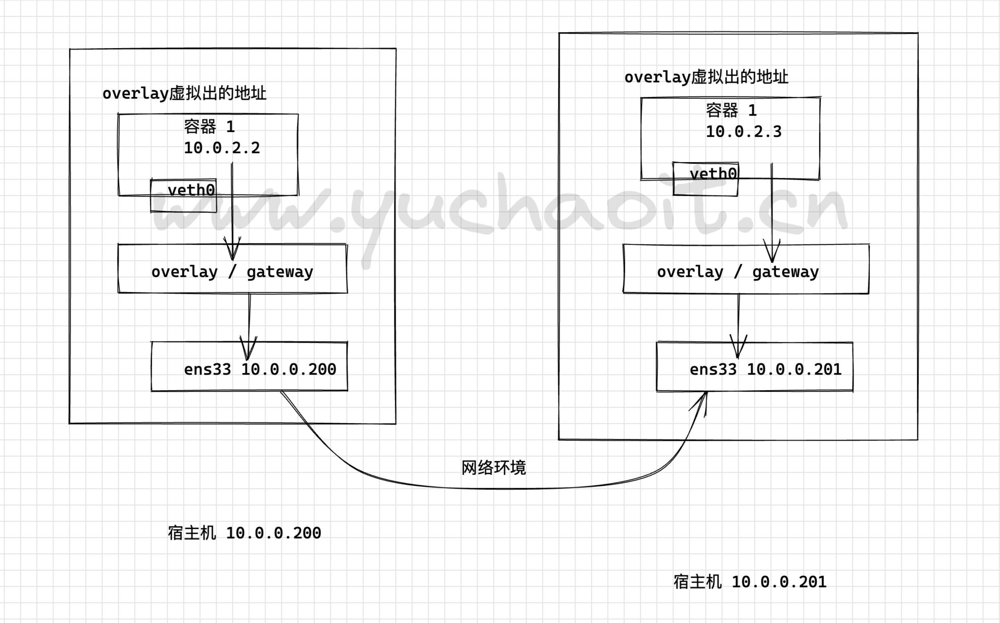
要实现overlay网络，我们会有一个服务发现。
比如说consul，会定义一个ip地址池，比如10.0.2.0/24之类的。
上面会有容器，容器的ip地址会从上面去获取。
获取完了后，会通过ens33来进行通信，这样就实现跨主机的通信。
docker-200创建overlay网络
[root@docker-200 ~]#docker network create -d overlay --subnet=10.0.2.1/24 www.yuchaoit.cn_overlay_net
5989e980ca834bf84257938c5dc533401a398e06db2ecba67c2f8763f5f5fdcb
[root@docker-200 ~]#docker network ls
NETWORK ID NAME DRIVER SCOPE
dfb82c33d669 bridge bridge local
f3971eca0c0f host host local
ca0e2d298a44 macvlan_1 macvlan local
ff6208d689fb none null local
5989e980ca83 www.yuchaoit.cn_overlay_net overlay global
[root@docker-200 ~]#
在docker-200上创建的网络信息，会立即同步到docker-201上。
consul任意节点配置的k/v 都会同步到其他节点。
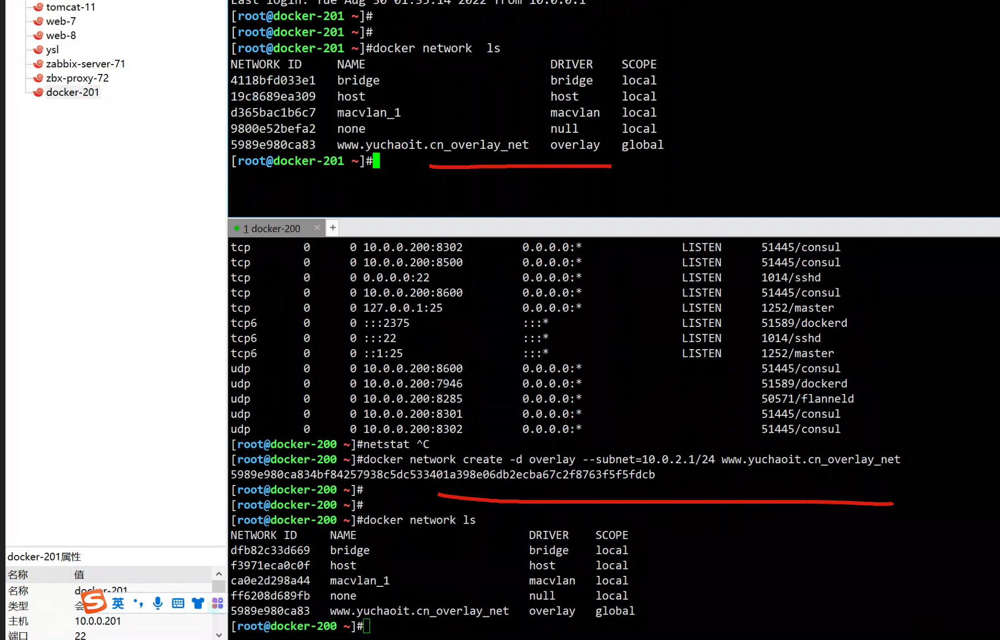
在docker-200上创建的网络信息，会立即同步到docker-201上。 consul任意节点配置的k/v 都会同步到其他节点。
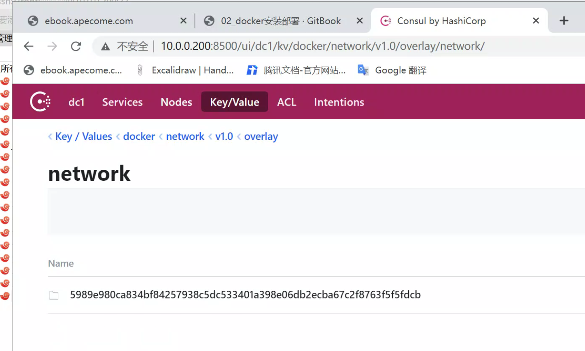
测试跨主机的通信
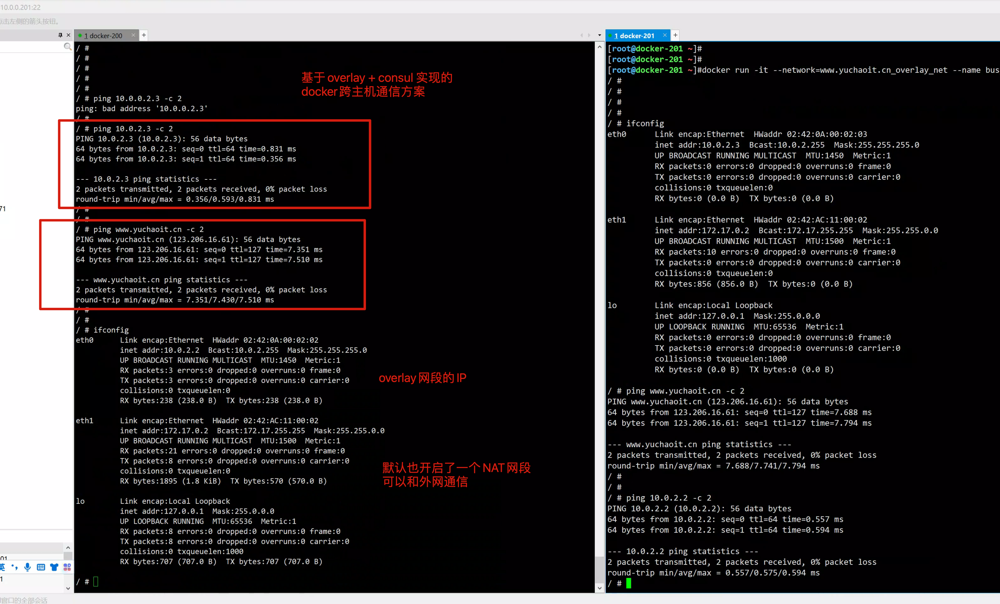
到此，我们这里实现了跨主机通信，是通过overlay network这种网络模式进行通信的。